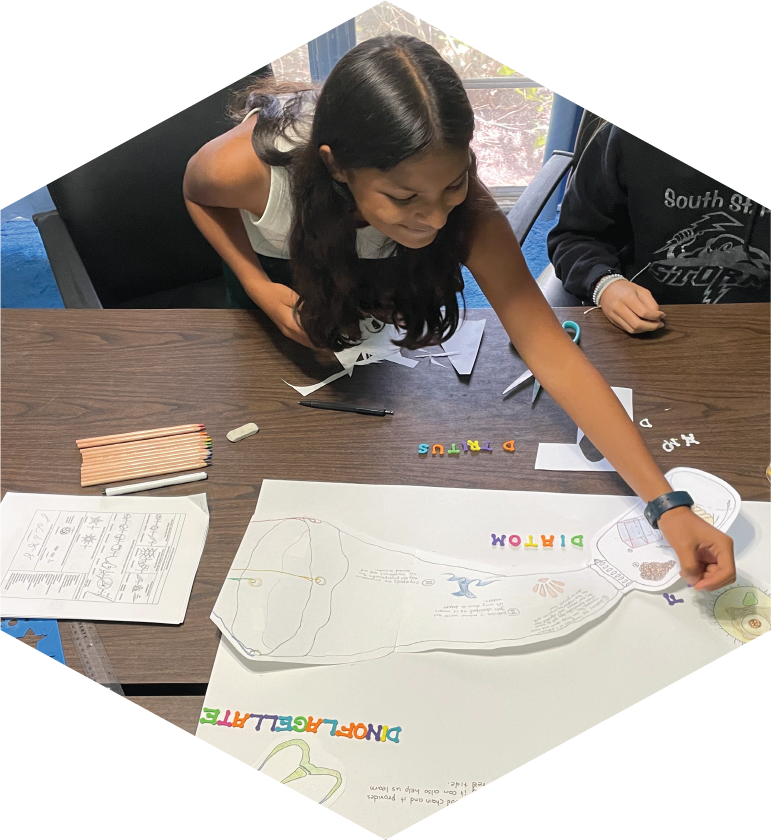
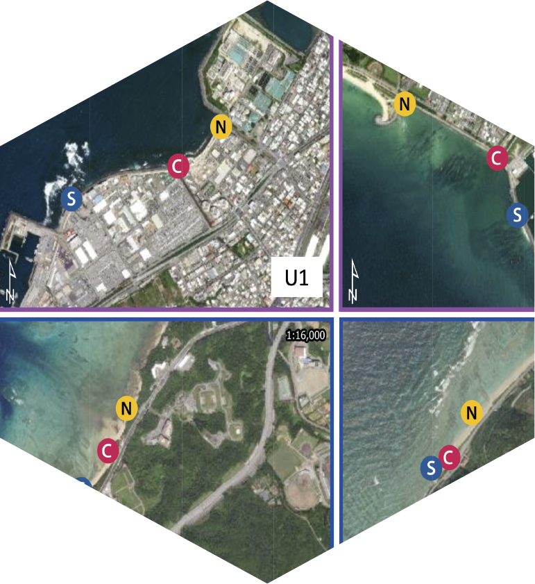
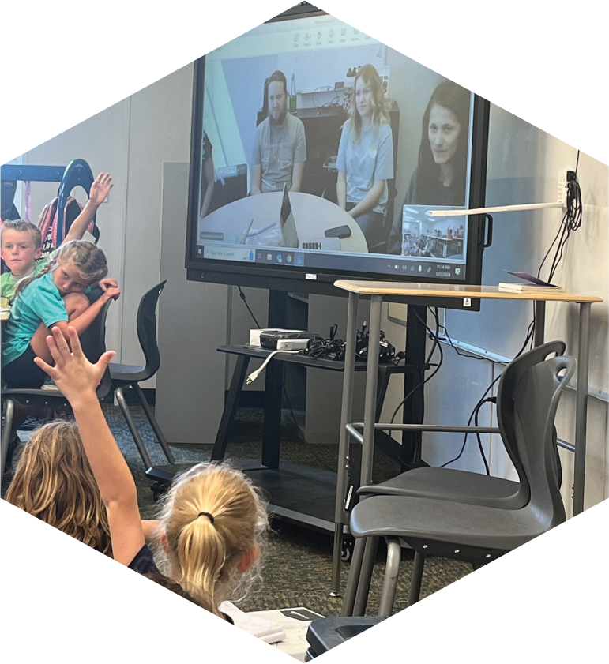
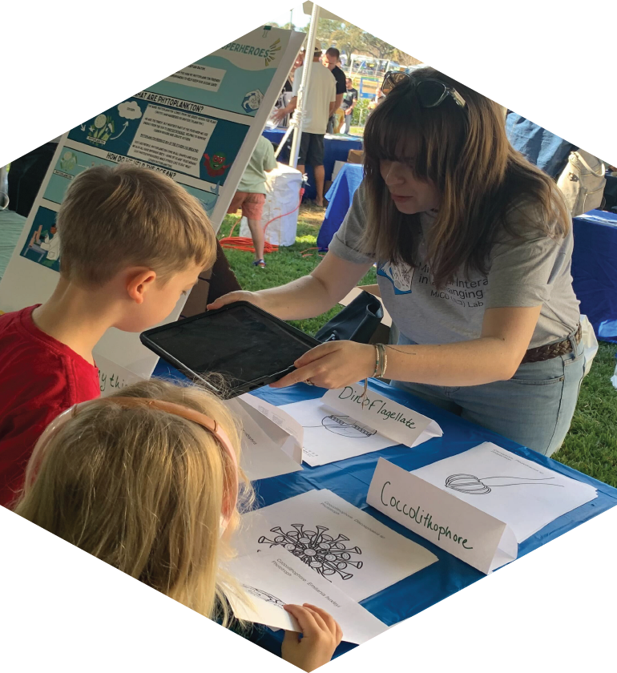
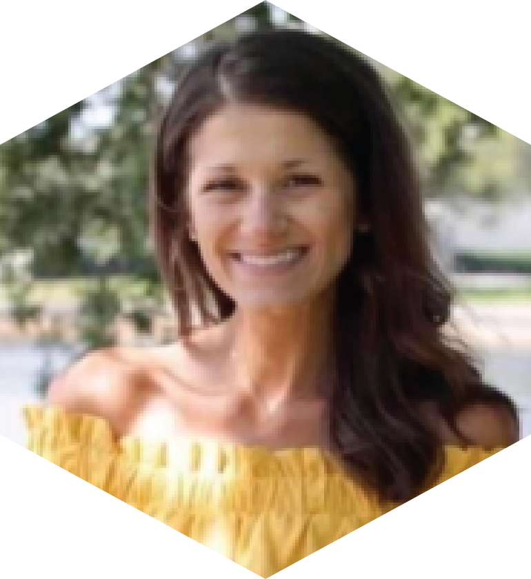

Posts & News
2024

[POST] June 28 - Oceanography Camp Especially for Girls
Every year dozens of girls in that pivotal summer right before they enter high school fill CMS with singing, laughter, and unrestrained learning. The Oceanography Camp Especially for Girls is a CMS outreach program that has been running since 1991 and has the express goal of keeping girls excited about science at a time in their lives when many lose interest. This year, the MICOlab volunteered as a host lab for a group of girls to have a hands-on research experience. On Day 1, we headed outside to collect plankton and water samples from the CMS seawall. Next, we measured raw and extracted chlorophyll, looked at the plankton with the inverted microscope, and ran samples through the Planktoscope. On Day 2, the girls learned more about different types of plankton and classified all the plankton that they photographed with the planktoscope. Day 3 was for data analysis, poster making, and presentation prep. Finally, the girls gave a formal presentation of their work to a packed auditorium. By participating fully in each stage of research over the course of the week, these girls are better prepared for science in high school and beyond. And a lot of fun was had alongside Disney sing-a-longs and the best camp game: Ninja!! MICOlab undergrad, Lauren, volunteered to help out with camp and wrote this post about her experience!

[NEWS] May 31 - New Publication from MICOlab PI, Maggi Brisbin, in Estuaries & Coasts
Okinawa Island, Japan, is beautiful through and through. Still, its beauty has two sides: the northern half of the island is mostly national park, with expansive jungles and quiet stretches of white coral beaches, whereas the southern half is heavily urbanized. Cities are exciting and beautiful in their own way, but they come with pollution and shoreline modification that can have repercussions for adjacent marine ecosystems. The contrasting land uses in the southern and northern halves of Okinawa set up a natural experiment for studying the impact of urbanization on coastal ecosystems. The study published in the CERF journal Estuaries & Coasts analyzed bacterial communities in coastal seawater at two urban and two rural sites every two weeks for a full year since shifts in microbial communities can be indicators or predictors of larger ecosystem disturbance. Physicochemical measurements (temperature, salinity, dissolved oxygen, turbidity, and major nutrients) accompanied water collections, and the relatively high frequency of measurements helped separate seasonal variability from true site differences. Results revealed higher diversity bacterial communities in coastal waters adjacent to urban sites throughout the year, with the increased diversity largely stemming from added bacteria with potential anthropogenic sources (wastewater and runoff). Increased nutrient loading and larger fluctuations in salinity at urban sites highlight the impact of concretization on runoff reaching the coast. The persistently altered state of microbial communities in urban coastal waters and interrupted seasonal cycle indicate that either urbanization causes a sustained disturbance or that communities there have reached a tipping point and a regime shift has occurred. There are serious implications for coastal water quality and ecosystem function in either case. Read the full open-access article here.

[POST] May 22 - Here’s to the future scientists! MICOlab zooms with second graders
Connecting with future scientists is a common passion among MICOlab members. As the school year was coming to an end, the second grade students at Pine Island Academy in Jacksonville, FL, took some time out to meet with us over zoom and ask us all their questions about being scientists and doing science. Led by Lydia, we prepared a presentation of photos to illustrate what a day in the life of a marine scientist might entail, including lab work, coastal field work, and oceanographic research cruises. The students already studied oceanic zones and animals, such as the twilight zone and the benthos, so they were well prepared to ask us questions about research, becoming a scientist, and sharks. There were a lot of questions about sharks—What is the oldest shark in the ocean?, How do you catch sharks?, How do you know where to find sharks?, and more. There were also some fabulous questions about doing science like: What is your favorite part of your day? and, Do you have a secret lab? We were all impressed with the depth and breadth of the students’ knowledge and thoroughly enjoyed interacting with them. We are already looking forward to meeting with more classes next year. Click here to read Lydia’s post about this outreach activity and see photos.

[POST] Feb. 10 - MICOlab puts plankton in the spotlight at St. Petersburg Science Festival!
The St. Petersburg Science Festival is a two-day event hosted at the University of South Florida St. Petersburg campus every winter. This year, 12,000 visitors of all ages flocked to the USF campus to learn about science and engineering in the St. Pete region, with exhibits organized by the USF College of Marine Science, the Florida Fish and Wildlife Research Institute, USGS, NOAA, Eckerd College, the U.S. Coast Guard, Tampa Bay Watch and many more. The MICOlab exhibit featured the Planktoscope running fresh samples from Tampa Bay and Virtual reality experiences from Planktomania. Guests that visited our exhibit saw diatoms and copepods collected off the CMS seawall and imaged with the planktoscope. The planktoscope is portable high-throughput imaging microscope that is easy to operate and excellent for outreach. MICOlab group members explained how phytoplankton like diatoms are the base of the marine foodweb and zooplankton like copepods transfer organic carbon in phytoplankton up the food chain. Through the Planktomania VR, guests experienced an immersive tour through the biodiversity of planktonic organisms in the global ocean. Planktomania AR was a big hit among our youngest visitors, who colored in their favorite plankton and then saw it pop out of the paper in 3D with iPads running the Planktomania app. Read MICOlab grad student Andreas Norlin’s full account of the day here, and if you missed us this year we hope to see you at the next Science Festival!!
2023

[NEWS] Nov. 23 - MICOlab grad student Lydia Ruggles is awarded SECOORA travel grant!
In honor of Vembu Subramanian, SECOORA (The Southeast Coastal Ocean Observing Regional Association) established the Vembu Subramanian Ocean Scholars Award—an annually awarded grant to support undergraduate and graduate students presenting their research at national and international scientific conferences. Lydia submitted a proposal to present her thesis research at the Gordon Research Conference (GRC) on Marine Microbes taking place in Les Diablerets, Switzerland at the beginning of June 2024. Lydia’s proposal, “Bacterial interactions with saxitoxin-producing Pyrodinium bahamense in Florida ecosystems: effects on growth, bloom formation, and toxin production”, was selected along with two other USF CMS students, Emma Graves and Samantha D’Angelo. Read more about the award and this year’s recipients here. Stay tuned to hear more about Lydia’s first conference and international travel experience!